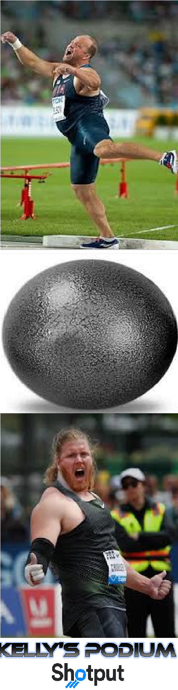

Welcome to Kelly's Podium 
Kelly's Podium is a company from County Donegal in Ireland and the comopany has expondentially risen to the top of the chain in the shot put market. The company has worked with other big label companies such Neuff, Polanik, and even Nike.
WHERE ARE WE BASED AND WHY WAS THE COMPANY CREATED ?
Kelly's Podium is a multinational company from County Donegal which was created by :
The company was created because the world did not have enough shot puts. There was crisis in the athletics world that people did not have enough shot puts because the track events were getting too much attention and the throwing community was declining. The creators of Kelly's Podium had to step in and take action to create a whirlwind of shot puts for the world to have. Kelly's Podium had help from companies such as Neuff, Polanik and Nike.
WHAT IS THE PURPOSE OF THIS COMPANY ?
There is quite a few reasons for the purposes of the company and those reasons are :